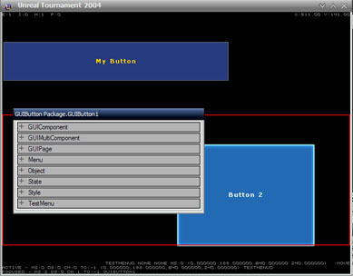

Automated Component
The new internal management system for GUIMultiComponents enables you to automatically create variables of the desired type, without casting. It also handles initialization, tab order, and render weight for each automated component. It involves two new specifiers: one for classes - instanced, and one for properties - automated.
var automated GUIButton FantasticButton; defaultproperties { Begin Object Class=GUIButton Name=FantaticButtonTemplate OnClick=InternalOnClick WinWidth=0.06 WinHeight=0.04 bBoundToParent=True bScaleToParent=True End Object FantasticButton = FantasticButtonTemplate }
Instanced is a class modifier that was added in UT2004. It indicates that all objects of this class should be instanced. For an explanation of what that means, exactly, see Subobject.
Automated is a variable modifier that was added in UT2004. This modifier is currently used only in the GUI, and indicates that the object assigned to this variable should be automatically added to the Controls array when the class is initialized. This auto-assignment is handled by the native function GUIMultiComponent.InitializeControls, which is called from GUIMultiComponent.InitComponent(). InitializeControls() iterates through all properties of the class, and builds a list of object properties (or arrays of object properties) marked automated. Any objects assigned to an automated object variable are added to the GUIMultiComponent's Controls array.
GUIMultiComponent defines two arrays of GUIComponents - Controls and Components.
The Controls array contains all GUIComponents defined and initialized in that menu (note: I use "menu", but this applies to any subclass of GUIMultiComponent, not just GUIPage). When using automated controls, the controls array will be sorted natively by RenderWeight, a property of GUIComponent. Any components added to a menu after the menu has already been initialized (via AddComponent() or AppendComponent()) will be inserted into the menu's Controls array according to RenderWeight. The menu is drawn first, followed by Controls[0], then Controls[1], etc. until controls have been drawn.
The Components array contains all controls on the page that are have bTabStop set to True. Generally, Components are controls on the page that can accept input, such as buttons, edit boxes, and tabs. The components array is sorted by TabOrder, a property of GUIComponent. The Components array will always be automatically managed, regardless of whether you are using automated components or not. GUIMultiComponent provides methods for manipulating both the Controls and the Components array.
You cannot use automated components if you have any controls defined in defaultproperties. InitializeControls() checks if there are any existing members defined for the Controls array in the class's default properties, and if so, simply returns. If you wish to use automated components in a subclass of another menu which defines its Controls in defaultproperties (UT2003-Style), set bAlwaysAutomate to true in your subclass's defaultproperties. When InitializeControls() is called, if bAlwaysAutomate is true, it will first empty the Controls array, then proceed to rebuild it using only automated components. Of course, you could assign Controls in defaultproperties, then set bAlwaysAutomate=True, but there wouldn't really be much point to that... 
UT2004's GUI uses automated components exclusively, and I'd highly recommend doing the same - it makes managing controls MUCH easier.
AutoPositioning
// Auto-positioning - accounts for bBoundToParent & bScaleToParent native final function AutoPosition( array<GUIComponent> Components, float LeftBound, float UpperBound, float RightBound, float LowerBound, float LeftPad, float UpperPad, float RightPad, float LowerPad, optional int NumberOfColumns, optional float ColumnPadding );
GUIComponent.AutoPosition() is a native function that will automatically position an array of GUIComponents within the bounds passed to the function. It takes eleven parameters. The first parameter is an array of GUIComponents that will be positioned. The next four parameters define the bounds of the area that you wish the components to be positions within, and the next four parameters specify the amount of padding to add to each side. These parameters must be actual screen values, not scaled values (For example, pass in the value of ActualTop(), not WinTop). The final two parameters are optional, and allows you to break the components into columns.
AutoPosition() first applies the padding values, then divides the length of the passed-in array by the difference between the lower bound and the upper bound to find the component offset. It adjusts each of the array member's WinWidth, WinLeft values based on the values passed into the function, and adjust each array member's WinTop value based on component offset. It does NOT modify the WinHeight value of the components. If the total number of components multiplied by the offset value would be greater than the bounded area, AutoPosition() writes an error to the log, and returns. AutoPosition() accounts for the bBoundToParent and bScaleToParent values, and internally adjusts the ratios of the components accordingly.
A closely related function is AutoPositionOn(). This function is simply a wrapper for AutoPosition(), by allowing you to specify a component (such as a background image) that you would like to use for positioning, with parameters for padding percentages.
GUISectionBackground? was sort of the evolution of AutoPosition & AutoPositionOn(). GUISectionBackground is essentially a background image that auto-positions other components. GUISectionBackground? has modifiable background & header images, and you feed it components to be managed using its ManageComponent() function.
Multiple instancing
One of the largest benefits of using AutoPosition() to position your components is that you can very easily take advantage of multiple instancing. Multiple instancing is where you have one templated subobject definition, but assign multiple variables to it.
Begin Object class=GUIImage Name=HUDPreviewImage ImageStyle=ISTY_Scaled ImageColor=(R=255,G=255,B=255,A=255) WinHeight=0.5 RenderWeight=0.51 End Object i_HUDTop=HUDPreviewImage i_HUDTopRight=HUDPreviewImage i_HUDTopLeft=HUDPreviewImage i_HUDMiddleRight=HUDPreviewImage i_HUDMiddleLeft=HUDPreviewImage i_HUDMiddleRight=HUDPreviewImage i_HUDBottomLeft=HUDPreviewImage i_HUDBottomRight=HUDPreviewImage i_HUDBottom=HUDPreviewImage
You can then pass these components to AutoPosition() as an array, and they will be automatically positioned for you. If you need to make changes to the original template image, you'd only need to make this change in one place. Likewise, if you wanted to add additional components, or remove components, you'd need only to add/remove the assignments in default properties. No more resizing dozens of components in design mode every time you change one option!
Overriding automated subobject definitions
Mychaeel: That's a very neat set of new features you're describing here. It's just a bit of a pity that it's specific to the GUI classes and not made so generic that all classes could benefit from it – by allowing the "automated" keyword in any class, introducing an "InitObject" event in Object and defining a native "InitObjects" function in Object instead of InitComponents in GUIMultiComponent.
Advanced use of Ingame Gui Designer
Before reading this, you will want to read the mention of the Gui Designer in GUIController which allows you to move GUI components around in the menus ingame and play with their properties.
There have been a few additions to the in-game menu authoring system. The most noticable is that when you select a component a properties window (a la UnrealEd) will appear where you can edit the selected component. Obviously you need to be running in windowed mode for this to happen.

When you declare a variable as automated it will show up in the last category on this menu. If you expand the automated variable you will have two options as usual with adding new elements in the editor. You can select a previously created button or you can go down one and click New. Here it will give you a list of classes that you can put into your automated variable. For example, if you declare an automated GUIButton then the list of possible classes that variable can be include GUIButton, GUIComboButton, GUIEditBox. Once created you can set all of it's attributes of size and appearance. If you then hit CTRL+X while you have the top level menu selected it will export the Object definitions for ALL your automated variables. You could then just copy and paste it into the default properties. (It turns out to not be that easy)
Here's where I'm a little confused about what they intended. The controls do not actaully instantiate on the menu and you can't visually manipulate them unless you add them to the Controls array in the editor window. I thought one of the advantages of an automated variable is that when you create it it is automatically added to the Controls array at run-time so you don't have to mess with filling in the array yourself.
Anyway, I'll just explain how I did it and let someone else correct me. So after filling in the automated variables with the types of controls each of them is assigned an automatically generated name. I then add them to the Controls array so I can visually manipulate them on the screen so I go to Menu→Controls in the editor window and select Add. In the drop-down box select the automatically generated name that was given to the control you want to instantiate. Note you can also select from the other controls that are declared in other objects. After that click the Init button. Now the control should appear on the screen and you can edit it. One thing to note is that the control specified by the automated variable is _not_ a template. If you change the instantiated control then it changes the automated variable declaration too. Therefore you couldn't have two different buttons that used the same class, you'd have to make a seperate class for each.
So once you've got everything set up you can select the top level menu and hit CTRL+X (I've had to hit it a couple of times before for it to actually copy sometimes, dunno) and it will export the menu to the clipboard.
Ok, a couple of things that confuse me about the exportet text. It starts with an Object declaration of the Menu itself, this isn't what we want I don't think so I just delete that. Ok, now notice that it does assign the object you've created to the automated variable, BUT on mine at least it doesn't corrently identify the package (ie. Package.GUIButton1 instead of VTactics.TestMenu.GUIButton1). So I have to change that for each control. Also, I delete the ToolTip entry. Now since we instantiated the controls in the Control array you'll also notice the entries in that array (ie. Controls(0)=GUIButton'VTactics.TestMenu.GUIButton1'). I also delete these entries since being automated they are added at run-time.
I checked with with someone "in the know" and he said that everything I wrote above is pretty much accurate. He said that because of it's unpolished state the built-in GUI Designer still isn't quite ready for full fledged menu creation but more for just tweaking. He also said that he was planning on fixing a few of the above problems with the exported menu definitions so that there wouldn't be a need for as much clean-up afterwards. He said he knows the whole process is pretty rough still but that's why he made the GUIDesigner.dll self contained so it could be easily upgraded later.
RegularX: Great info. I might have to post a bounty for decent tutorials on starting from scratch with some of this stuff. It looks immensely powerful drifting through the UScript code, but unfortunately it also looks just plain immense. For stuff I'm trying to get down for the next MSUC deadline, I might have to stick to 2k3 GUI, just because it's what I'm familiar with...
TODO :